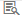
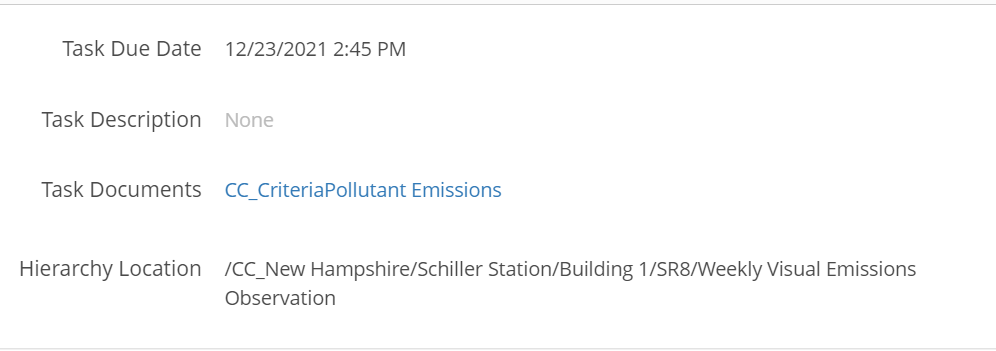
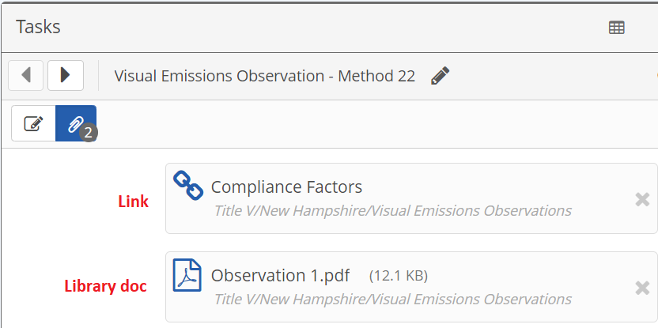
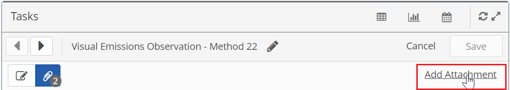
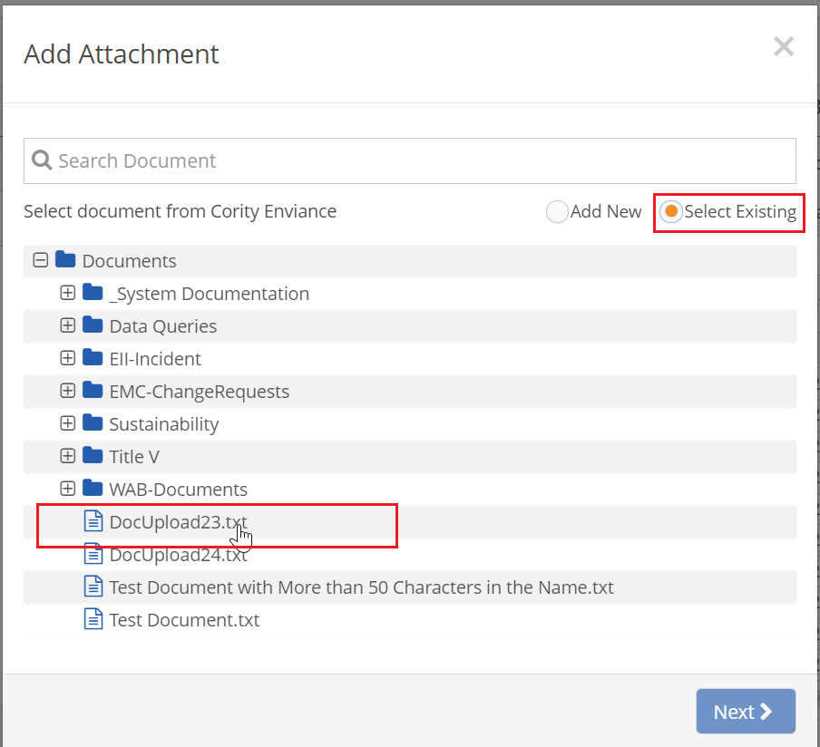
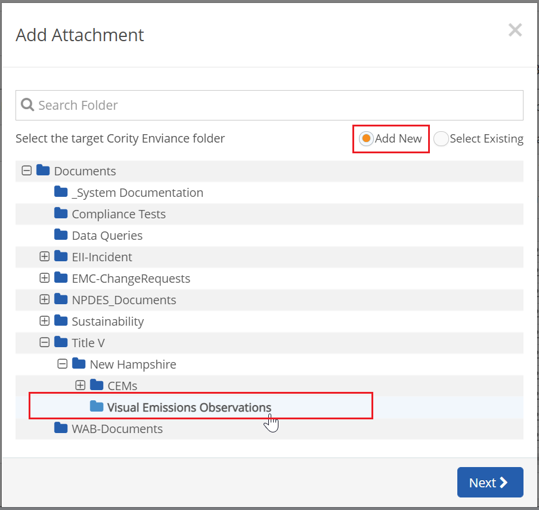
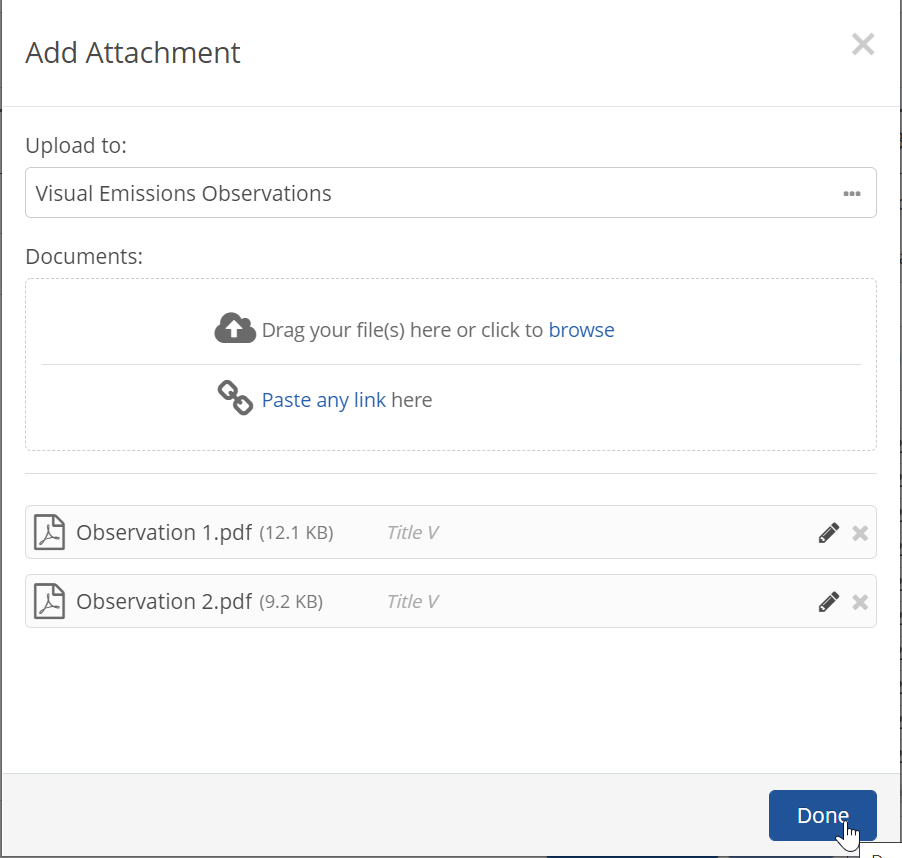
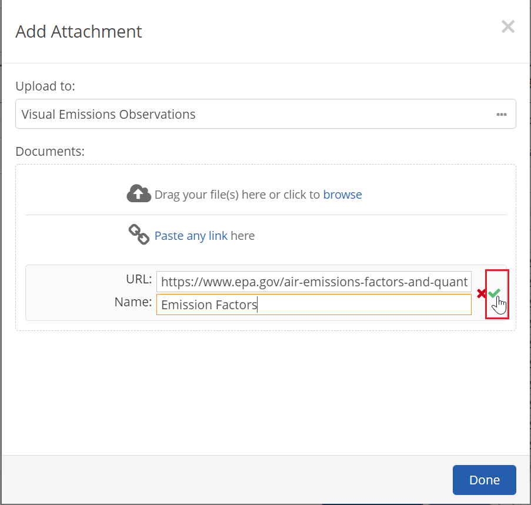
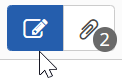
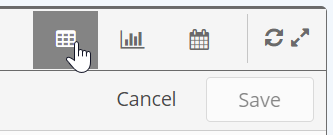

The documents attached to a task, workflow or event may be accessed from the form view.
To view attachments:
Select the Form icon

from the table view to open the form.
Attachments added to a task by the task creator will be displayed as Task Documents links in the task details. Select the link to view or download the attachment.

General attachments added to a workflow or event as part of the assignment will also show as link fields in the form in the area for completion.
Attachments to a workflow or event instance will be indicated by the paperclip button, with a number indicating the number of attachments:
Select the paperclip button to see the list of attachments. Links to external documents or websites are indicated by the link icon.

Select an attachment to view.
Links will open in a new browser window.
PDFs and images are opened in a preview window with the option to download it. Other documents types may be downloaded.
If you have the appropriate permission, you may attach a document to a workflow or event for the purpose of documenting its completion.
To attach a document to an event or workflow form:
From the Form view, select Add Attachment.

Select a document folder and the one of the options: Add New or Select Existing.
To attach an existing document from the document library, choose Select Existing. Select a folder to see the available documents and select the one you want.

To upload a new document, or to create a link to an external document or website, select Add New. Select the folder in which to save the document.

Click Next.
To attach one or more files from your computer or network:
Select Browse and browse to select the files or drag and drop a file from a local folder onto the screen.

To edit a document name, click the pencil icon. Click the check mark to save your edit before clicking Done.
Click Done.
To create a link to an external document (by URL):
Click Paste any link.
Paste the URL to the document or site into the URL field. Enter the Name for the link.

Click the check mark to save before clicking Done.
When you have finished creating attachments, click Done.
To return to the form, select the pencil icon.

To go to the next or previous workflow in the list, select the Next or Previous buttons.
To return to the panel view, select the table chart icon on the top bar.

To remove attachments:
Click the X in the right corner of the document in the list.
Choose whether you want to delete it from the system or just remove the association.